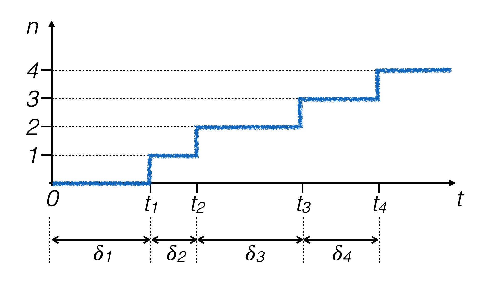
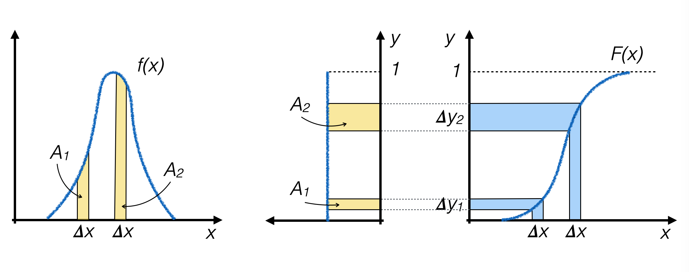
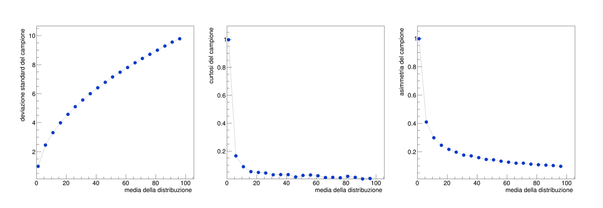

7. The Poisson Distribution#
7.1. Poisson processes#
A physical process that produces random events distributed over time is Poissonian if:
the events are independent of each other
the probability of an event occurring does not depend on the measuring instant
If a sequence of random numbers corresponds to the times of a Poisson process, then it’s true that:
if the probability of an event occurring in one unit of time is p, the number of observed events in a given time interval τ follows the Poisson probability distribution:
\[ P(n; \tau, p) = e^{-\tau{}p}\:\frac{(\tau{}p)^n}{n!} \]the time differences δi between two successive events follow an exponential probability density distribution 
7.2. Generating events with a Poisson distribution#
To obtain pseudo-random events distributed according to a Poisson probability distribution, one can:
generate events according to an exponential probability density distribution with a characteristic time t0 set to unity
count how many events fall into a specific interval \(\tau\) chosen with length \(\lambda\), where \(\lambda\) is the mean of events expected from the Poisson distribution
7.3. Generating events using the technique of the inverse function#
Let x be a continuous random variable with pdf f(x)
Let F(x) be the f(x) cumulative probability distribution (CDF)
If F(x) is strictly increasing, then the variable y = F(x) has a uniform distribution (this is proven using the chain rule when changing variables in a pdf)
Generating pseudo-random events with a uniform distribution in y is equivalent to generating pseudo-random events along x with distribution f(x)
7.3.1. Inverse function algorithm#
Analytically calculate F(x) and its inverse function F -1(y)

Generate pseudo-random numbers yi with a uniform distribution between 0 and 1 along the y axis
For each generated event, calculate xi = F -1(yi) and use that value as the generated random number
Where f(x) is higher, F(x) is steeper, so the number of pseudo-random numbers generated in the two intervals Δy1 and Δy2 is proportional to the area under the curve f(x) above the two intervals with size Δx, respectively, which is the objective that one wants to achieve.
7.3.2. Exponential function#
In the case of the exponential distribution, the requirements for the application of the method are satisfied, as its primitive is known and can be inverted:
\[\begin{split} f(x) &= \frac{1}{\tau}e^{-t/\tau} \\ F(t) &= \int_{0}^{t}\frac{1}{\tau}e^{-s/\tau}ds = 1-e^{-t/\tau}\\ y &= F(x)~\to~ x = F^{-1}(y) = -\tau \log (1-y) \end{split}\]
In this case, the variable y is a pseudo-random number following a uniform probability density distribution between 0 and 1 (which is the range of values an exponentially decreasing function defined on the positive x axis can assume)
7.4. Characteristics of the Poisson distribution#
With the described tools, you can generate samples of pseudo-random numbers of a Poissonian type and verify the characteristics of their distribution, through the study of the moments of the generated samples.

Note
The exercises for the lecture may be found here